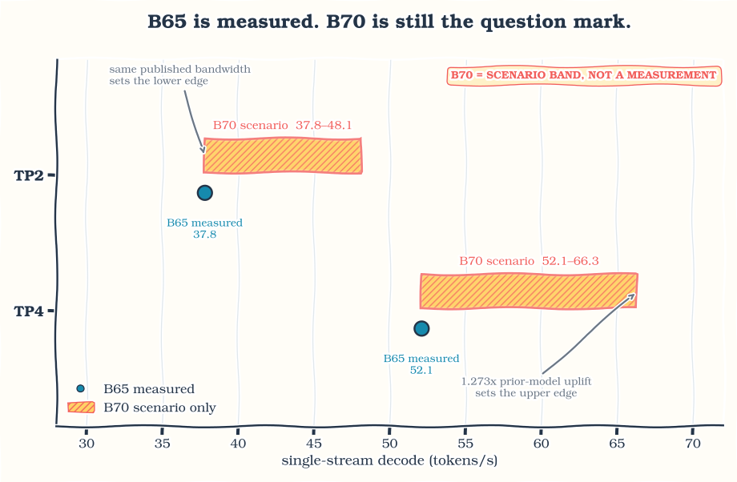

Qwen3.8-27B decodes at 37.8 tokens per second on two Intel Arc Pro B65 cards, which lands within 9% of what the official FP8 checkpoint does on four. Give the same four-bit build all four cards and it reaches 52.1 tok/s. Halving the hardware for a workload like this is the result I care about most, and it came from a quantization decision rather than a new kernel.
I wanted Qwen3.8-27B as the local backend for coding agents: good at code, useful at long context, small enough to run on a few GPUs. Local agents make latency personal. A slow token is not a number in a benchmark, it is an interruption while you are editing a file, searching a repository, or waiting on a tool call.
Getting there took longer than expected. The model is dense, multimodal, and mostly built from Gated DeltaNet layers. It has a multi-token-prediction head, a vision tower, and enough different execution regimes that a change which looks great in a standalone kernel can vanish, or turn into a regression, once it is inside the server.
The interesting results were not heroic. The largest four-bit step came from a library primitive that already existed. Group size 128 beat group size 32. A cost I had written off as fixed host overhead turned out to be dense device work. And the 48 DeltaNet layers I expected to dominate decode were not where most of the time went.
This is independent work I did in my free time on hardware available to me. It is not an Intel release or an official Intel performance result. Intel XPU support has been arriving quickly in SGLang and the surrounding stack, so the job here was to optimize this particular model and add the model-specific pieces missing from the version I used. Before applying anything described below, check whether current upstream already has it.
Scope of the numbers: every measured Qwen3.8 result here is on Intel Arc Pro B65 GPUs. The B70 section is an estimate, clearly marked, not a Qwen3.8 measurement. “Decode tok/s” means
1000 / TPOTat the stated context and concurrency; it is not the benchmark’s output-throughput field, which folds time-to-first-token into the same wall-clock interval.
Running it
If you only want the model serving, this is the setup I use daily: four Arc Pro B65 cards at tensor parallelism 4, the model’s full 256K context, and enough room configured for several requests in flight at once. A single stream decodes at 52.1 tok/s on an 8K prompt, and token-to-token latency stays flat as the context fills.
The weights are at ulkaa/Qwen3.8-27B-AWQ-INT4 and the pinned serving image is on Docker Hub as rahulunair/sglang-xpu, tag qwen3.8-27b-20260816.
docker run --rm --device=/dev/dri -v /dev/dri:/dev/dri \
--group-add video --group-add "$(getent group render | cut -d: -f3)" \
--cap-add=SYS_PTRACE --security-opt seccomp=unconfined \
--ipc=host --shm-size=64g --ulimit memlock=-1 \
-p 30000:30000 -v /path/to/Qwen3.8-27B-AWQ-INT4:/model:ro \
-e ONEAPI_DEVICE_SELECTOR=level_zero:gpu \
rahulunair/sglang-xpu:qwen3.8-27b-20260816 \
python -m sglang.launch_server --model-path /model --device xpu \
--tp-size 4 --attention-backend intel_xpu --page-size 64 \
--context-length 262144 \
--chunked-prefill-size 4096 --mem-fraction-static 0.85 \
--cuda-graph-config '{"decode":{"backend":"full","bs":[1,2,4,8]},"prefill":{"backend":"disabled"}}'Use --tp-size 2 on a two-card machine, where the same prompt decodes at 37.8 tok/s. Leaving --max-total-tokens unset lets the server size the KV pool from the memory it finds; pin it lower if you are sharing the cards with something else. The SYS_PTRACE and unconfined seccomp flags are there for one optional fast collective I describe later; drop both and the model still runs normally.
Do check current upstream SGLang and Intel images before reaching for a pinned image. A pinned release is useful for reproducing this article, not evidence that its patch set deserves to live forever.
The rest of this post is how I got there, for anyone who wants the reasoning rather than the recipe.
What are we actually running?
Qwen3.8-27B has 64 decoder layers. Forty-eight use Gated DeltaNet, a linear attention recurrence, and 16 use full attention. It is dense rather than mixture-of-experts, so almost every large text-model weight participates in every decode step. The checkpoint also carries a 27-layer vision tower and a multi-token-prediction head.
That shape splits the problem into two regimes:
- Decode at batch one has very little arithmetic reuse. It is mostly a question of how many bytes must cross memory for every new token, plus small kernels, layer boundaries, and collectives.
- Prefill turns the same projections into larger matrix operations and adds context-growing attention work. Compute throughput and tile efficiency matter much more here.
I kept two checkpoints working throughout.
- The official Qwen3.8-27B-FP8 checkpoint, my reference while getting everything working.
- My Qwen3.8-27B AWQ W4A16 checkpoint: 18.2 GiB, asymmetric group-128 quantization, BF16 vision tower and MTP tensors preserved.
“FP8 model” and “AWQ model” describe how a checkpoint stores its weights, not necessarily the instruction that runs every projection. The runtime may dequantize into BF16, keep an extra signed-INT8 copy for decode, or dispatch a genuine four-bit primitive. Keeping storage precision, activation precision, and selected kernel separate in my head avoided a lot of confusion.
These are the final runs. Output was coherent, graph replay and the expected fast paths were active, and I used the second run of each shape. Earlier numbers helped me debug the model but are not useful baselines.
| model and setup | GPUs / TP | input / output | TTFT | prefill, TTFT-derived | TPOT | decode |
|---|---|---|---|---|---|---|
| official FP8, optimized dense decode setup | 4x B65 / TP4 | 8K / 1K | 2,313 ms | 3,542 tok/s | 24.17 ms | 41.4 tok/s |
| AWQ group 128, oneDNN W4A16 | 2x B65 / TP2 | 8K / 1K | 4,479 ms | 1,829 tok/s | 26.44 ms | 37.8 tok/s |
| AWQ group 128, oneDNN W4A16 | 4x B65 / TP4 | 8K / 1K | 2,749 ms | 2,980 tok/s | 19.20 ms | 52.1 tok/s |
These are complete setups, not a one-change-at-a-time comparison: graph capture on, concurrency 1, second run, roughly 9K context at the end of decode.
The first two rows are the ones I keep coming back to. Two cards running my four-bit build land at 37.8 tok/s against 41.4 for the official checkpoint on four. I would not turn that into an efficiency percentage, because the two rows use different checkpoint formats and different code paths. As a practical statement about hardware, though, it is the whole point: the same class of interactive experience, on half the cards.
The official FP8 checkpoint stays useful. It is the standard model, it works in the release image, and it helped me separate genuine model behaviour from bugs in my own quantization pipeline.
Before writing a kernel, do the boring math
The first question about any operator is whether it is limited by arithmetic or by memory traffic:
time >= max(useful_FLOPs / achievable_FLOPs_per_second,
bytes_moved / achievable_bytes_per_second)For batch-one dense decode, arithmetic intensity is close to one operation per weight byte. The memory term wins quickly, so the first useful model is just counting bytes:
bytes_per_token = sum(weights and metadata read by one decode step)
seconds_per_token = bytes_per_token / aggregate_achievable_bandwidth
tokens_per_second = 1 / seconds_per_tokenCount from the safetensors headers, not from a number in config.json. An embedding table is resident but only one row gets looked up. The vision tower is resident but idle during a text-only turn. The MTP head is only read when speculation is active. On a multimodal model, counting every resident tensor can add several GiB the step never actually reads.
Quantization metadata counts too. A nominal four-bit weight with group scales and zero points is not exactly 0.5 bytes per parameter. In this format it is about 0.52 bytes at group 128 and about 0.59 at group 32, and that metadata is read alongside the payload on every token.
Prefill is a different calculation. A reasonable first approximation for the dense projections is 2 × parameters × prompt_tokens floating-point operations, with the attention term added separately. This is why one number called “model throughput” should never be used for both phases.
Intel lists both the B65 and the B70 at 32 GiB and 608 GB/s of memory bandwidth. The B65 has 20 Xe2 cores and 197 peak dense INT8 TOPS; the B70 has 32 cores and 367 TOPS. Same advertised bandwidth, roughly 1.86x the INT8 compute. Decode and prefill should therefore scale differently even before software enters the picture.
A roofline is not a target. It is a boundary and a smell detector. It tells you when a proposed optimization cannot possibly repay its complexity, when a measurement looks suspiciously good, and when writing another kernel is unlikely to be the best use of the time.
Check upstream first, then add the missing bits
Pinned containers are good for reproducibility and are also time capsules. The XPU stack kept moving while I worked, so my loop for every missing path became:
- Check current SGLang, torch-xpu, oneDNN, Intel’s images, and the XPU kernel packages.
- Confirm whether the failure is still present in the pinned release.
- Separate a missing platform-specific branch from a missing implementation.
- Add the smallest overlay that makes the model correct.
- Delete the overlay when upstream covers the same case.
Step three is the one that saves weeks, and it came up immediately.
SGLang reads AWQ checkpoints through a component called compressed-tensors, which decides how packed four-bit weights get unpacked and which matrix kernel serves them. In the version I was using, two small things quietly assumed an NVIDIA GPU. A helper that rearranges packed weights into the layout the kernel expects was imported only when CUDA was available, then called later regardless. Separately, the code that picks a quantization scheme asked CUDA for the device’s compute capability before it had chosen a scheme at all, which simply fails on a machine with no CUDA device.
Neither of those means Intel GPUs lack a four-bit kernel. The kernel was there. The checkpoint just could not reach it, because the road to it ran through NVIDIA-only code. Adding the missing branch was enough.
The MTP path had the same shape. I registered the XPU attention backend in the speculative draft maps, routed the token-tree convolution to a Triton implementation that accepts tree arguments, and relaxed two helpers that rejected non-CUDA tensors even though their implementation was already Triton. Small integration fixes, not a replacement serving stack.
One more lesson: “the model loaded” is only the beginning of correctness. My first text-only quantization build silently omitted the vision tower and the MTP head. The library never instantiated an MTP module, so save_pretrained could not save tensors it did not know existed. I now build with the multimodal class, copy the MTP tensors explicitly, and verify the tensor list before any performance run.
The existing library primitive was the fastest kernel I tested
Once the model was correct enough to benchmark, the obvious question was which four-bit matrix path should serve the dense projections.
The answer was not my hand-driven kernel. On the same community AWQ checkpoint, the same two B65 cards, and the same captured 128-input/512-output shape:

Figure 1. The existing oneDNN primitive, not a new custom kernel, produced the largest measured four-bit step on this shape.
| path | TPOT | decode |
|---|---|---|
awq_dequantize followed by torch.matmul |
161.22 ms | 6.2 tok/s |
moe_grouped_mm_nt_xe20_w4a16, driven as a dense GEMM |
39.04 ms | 25.6 tok/s |
| the same kernel with split-K | 35.44 ms | 28.2 tok/s |
aten::_weight_int4pack_mm_with_scales_and_zeros / oneDNN |
28.46 ms | 35.1 tok/s |
That ATen primitive dispatches to oneDNN weight decompression. It needed no model-specific tuning file and, for this checkpoint layout, no second weight repack. Reading its source also explained a BF16/F16 difference I had measured: the specialized four-bit dequantization gate in the oneDNN version I used admits F16 and F32 compute types, while BF16 falls through to a more generic tile-conversion branch.
I spent a day pushing the hand-driven path before accepting the stop condition: if the library primitive is already close to the in-situ roofline, keep it as the baseline and move up a level. oneDNN wins this round.
That was a large improvement, and it exposed the next problem. The community AWQ checkpoint left the three large Gated DeltaNet projections in BF16, and those represented nearly half the bytes read during a decode step. The kernel was no longer the only question. The checkpoint itself had become part of the latency path.
Four bits is not really four bits
My checkpoint inventory measured the three large projections in every DeltaNet layer, input QKV, input Z, and output, at roughly 10.36 GiB in BF16. That is about 47% of the community checkpoint’s decode traffic. I nearly left them alone. Then I looked at the official FP8 release and found scale tensors for those same projections, with only the small surrounding tensors excluded. Useful prior: the model authors quantize these in their own low-precision release.
My AWQ build quantizes 24.33 billion parameters with asymmetric group-128 W4A16. Per-group scales and zero points bring the stored cost of those weights to 4.16 bits per parameter. Another 3.45 billion parameters stay BF16: embeddings, output head, norms, small DeltaNet gates, vision tower, and MTP head. Across the full checkpoint that averages 5.63 bits per parameter, or 18.2 GiB.
I did not arrive at group 128 immediately. The first all-four-bit build used group 32. It had finer quantization groups and fewer total model bytes than the community checkpoint, and it ran slower. Two measurements explained the sign:
- Group 32 reads four times as many scale and zero-point groups.
- On the same
down_projtensor atM=1, oneDNN moved group-32 data at 383 GB/s and group-128 data at 505 GB/s. The matching BF16 GEMV reached 589 GB/s.
Group size was not just a quality setting. It was a serving-layout decision, and re-quantizing at 128 was worth more than another day of kernel changes.
There is a partial victory hiding here. Quantizing the DeltaNet projections cut measured decode traffic from 21.82 GiB to 14.19 GiB, about 35%. In the matching TP2 run, throughput moved from 35.4 to 38.5 tok/s, about 9%.
| TP2 checkpoint, same short-context setup | bytes read per step | TPOT | decode |
|---|---|---|---|
| community AWQ, DeltaNet projections BF16 | 21.82 GiB | 28.24 ms | 35.4 tok/s |
| my group-128 AWQ, DeltaNet projections INT4 | 14.19 GiB | 25.95 ms | 38.5 tok/s |
Thirty-five percent fewer bytes produced about nine percent more tokens per second. The byte model found the opportunity, but the runtime said those newly quantized projection shapes were not behaving like ordinary dense four-bit GEMMs.
That gap is still open. The merged DeltaNet projection at TP2 has a shape unlike the dense FFN projections, and it is the leading suspect. I would rather publish the unexplained result than adjust the story until the arithmetic looks neat.
Graph capture changes both performance and observability
Decode is a long chain of small operations. Graph replay removes much of the per-operation submission cost, so graph capture is part of the setup I actually use, not an optional benchmark trick. Earlier work on two other models on these same cards measured it as a first-order improvement. For Qwen3.8 I do not have a clean graph-on/graph-off comparison, so I attach no new percentage to it.
Capture also changes what instrumentation means. A Python-side counter that gets incremented while the graph is being captured can replay the device work forever without ever incrementing the Python value again. I once had a fast collective serving happily inside the graph while its own log insisted served=0.
The only trustworthy proof was controlled removal:
- build the same graph with the path enabled;
- build it again with exactly that path disabled;
- run the same shape after compilation;
- require the timing to move by more than the quiet-box noise floor.
One of those A/B tests was for a small collective operation. When the model is split across four cards, every layer has to sum partial results from all of them, an operation called an all-reduce. During decode that message is tiny: one token at hidden size 5,120 in BF16 is about 10 KiB. At that size almost none of the time goes into moving bytes. It goes into the fixed cost of setting up the exchange and getting the cards to agree they are ready.
So a leaner path for small messages is worth having. The one I use is built on shared memory that the rank processes map directly, capped at 64 KiB, handing anything larger (prefill, mostly) back to the standard collective. Disabling it in the saved TP4 A/B run cost 4.41 ms per step.
Because it maps shared-memory handles across those processes, it needs SYS_PTRACE and seccomp=unconfined in my container. Those permissions widen what the container can do. They are required for this optional collective, not for running Qwen3.8 in general, so remove them and disable the path if that tradeoff does not suit you.
Hybrid models have another memory pool to watch. The recurrent state pool competes with the KV cache and can bound concurrency before the ordinary request limit does. I once configured it below the number of slots a single request needs and got a server reporting zero runnable requests, with an error that mostly talked about memory. Raising the request limit was never going to help. There was nowhere to put the recurrent state.
The trace blamed the wrong component
At one point I fit TP2 and TP4 measurements to a simple model with a sharded weight term and a constant term. The fit suggested roughly 12 ms that did not shrink with more cards. Host overhead or graph replay looked guilty.
Rather than apportion a busy trace, I priced components by removal on the real captured graph. Replace one component with shape-matched zeros, keep the rest of the graph and the collectives intact, and measure against an unchanged repeat. This does not produce a perfect additive profile, since collectives overlap some module rows, but it answers the causal question: what disappears if this component is removed?
Starting from a 28.59 ms B65 TP2 run:
| removed component | measured cost | share of the step |
|---|---|---|
| dense MLP bodies across 64 layers | 12.37 ms | 43% measured |
| attention sublayers across 64 layers | 10.39 ms | 36% measured |
| of which attention and GDN kernels | 2.24 ms | 8% measured |
| of which projections, gates, RoPE, and collectives | 8.15 ms | 28% measured |
| layer-stack all-reduces, overlapping the rows above | 3.82 ms | 13% measured |
| sampling path | 0.37 ms | 1% measured |
The supposedly fixed host term was mostly dense MLP device work, whose poor multi-card scaling made a two-point fit look constant. The DeltaNet recurrence itself was small. Had I trusted the fit, I would probably have spent another week optimizing the wrong layer family.
That changed the order of future work: merged four-bit projection shapes first, then dense scaling, then whatever a fresh removal budget turns up. The recurrence is not free, but it is not the first problem.
The final latency distribution is pleasantly boring
A mean TPOT can hide an ugly tail, so I measured the inter-token latency distribution for the final AWQ release. Each point below summarizes 1,023 inter-token intervals from the second run of a 1,024-token output, concurrency one, graph capture on.

Figure 2. Across the short and 8K prompts, p99 stayed within 0.66 ms of the median on TP2 and within 0.57 ms on TP4.
| GPUs / TP | prompt | median ITL | p90 | p99 | max |
|---|---|---|---|---|---|
| 2x B65 / TP2 | 256 | 26.16 ms | 26.51 ms | 26.82 ms | 32.32 ms |
| 2x B65 / TP2 | 8K | 26.41 ms | 26.63 ms | 26.97 ms | 32.40 ms |
| 4x B65 / TP4 | 256 | 19.10 ms | 19.37 ms | 19.67 ms | 22.16 ms |
| 4x B65 / TP4 | 8K | 19.17 ms | 19.37 ms | 19.60 ms | 22.14 ms |
This is the kind of graph I like: not dramatic, just steady. It supports a more useful statement than “the model does 52 tok/s”. At these two contexts and this concurrency, the ordinary token-to-token experience hides no large tail.
What might B70 do?
I have not measured Qwen3.8-27B on B70, so an exact B70 bar would be fiction. There are two useful boundaries though.
The conservative edge assumes no decode uplift at all, since B65 and B70 share the same advertised 608 GB/s of memory bandwidth. The optimistic edge borrows the largest B70-over-B65 decode ratio I measured on two other models, 1.273x. That is deliberately rough: Qwen3.8 is dense while those models are sparse hybrids, so their scaling does not automatically transfer.

Figure 3. The B70 range is a planning aid, not a benchmark. The lower edge assumes equal bandwidth means equal decode; the upper edge applies the largest uplift seen on two earlier models.
Prefill has a better reason to move, since the B70 has more Xe2 cores and roughly 1.86x the advertised dense INT8 compute. Even there I would not simply multiply the measured result by 1.86. Attention, dequantization, collectives, and achieved occupancy do not all scale with peak matrix throughput. The next honest graph is a measured one.
A quick detour through the other models
Qwen3.8 was the fourth model in this line of work. The earlier three are not apples-to-apples competitors, since they use different architectures, card counts, TP sizes, and workloads. Their value here is showing which methods survived contact with another model.
| model | one useful result | what I brought forward |
|---|---|---|
| Qwen3-Coder-Next 80B-A3B | 100.9 tok/s, B70 TP4, 8K/1K c=1 | graph replay, TP-specific tuning, small-collective latency, counting the weights actually used per token |
| Ornith 1.0 35B | 106.8 tok/s, B70 TP2, 8K/1K c=1 | check packed quantization against real tensors, and never assume a Qwen attention setting helps another hybrid model |
| DeepSeek-V4-Flash | 35.1 tok/s short-context decode and 2,355 tok/s at 8K prefill on 8x B70; a later single-stream test fit 801,024 usable tokens at a 1M setting | start with upstream, measure cold prefill separately, remove components to find where the time really goes |
The most useful warning came from Ornith. It looked similar to Qwen: hybrid attention, Gated DeltaNet, packed four-bit experts. Yet its asymmetric zero points changed the correctness contract, its router already used a good XPU top-k path, and the Qwen attention override made it slower. The method transferred; the configuration did not.
Those rows are signposts, not a cross-model contest. Each model deserves its own post, and I plan to write them. This one is about Qwen3.8 and the method I used to work out what it needed.
That is also why I do not present a bag of “Xe2 optimizations” to enable all at once. Graph capture, rooflines, proof that a fast path actually ran, and controlled A/Bs are methods. A tile size, context cutoff, or packed layout belongs to the exact model, card, and TP combination that earned it.
What were Codex and Claude actually useful for?
I used coding agents extensively during this work, mainly Codex and Claude. They were useful in a narrower and more practical way than “the agents wrote the optimization”.
- Reading an unreasonable amount of source. One investigation followed the SYCL grouped GEMM through its tile policy and reorder atoms, then compared it against oneDNN. That is how I learned the clever four-bit conversion I was about to implement already existed.
- Surveying an API surface. An agent enumerated quantized primitives with real XPU dispatch, their schemas, and their layout contracts, which quickly separated usable operators from names that merely sounded relevant.
- Building harnesses from a strict specification. The speculative-decoding harness refuses failed requests and keeps cache-sensitive natural-text tests separate from random-token kernel isolation.
- Running serialized campaigns. Tuning many shapes is boring but valuable, and it is a good background job when only one process may own the GPUs.
They were also entirely capable of producing a confident conclusion from an empty log. Twice a container had stopped and the missing output was treated as a finding. A pkill -f pattern matched the replacement command itself four times. One benchmark reported a rejected over-context request as zeros, which looked like an amazing performance result for a few seconds.
The defense was not asking an agent to be more careful. It was making the harness fail loudly, recording the exact setup and run number, keeping retractions beside results, and refusing to print metrics for a rejected request. The human job stayed arbitration: one benchmark on the GPUs at a time, one changed variable, and no number without a saved log.
Fast gibberish is still gibberish
Two quantization mistakes produced clean server starts and output consisting almost entirely of exclamation marks.
First, the text-only model class changed module prefixes. Weight loading had a name-translation layer, but the quantization ignore list did not, so exclusions silently missed their targets.
Then the quantizer added the container module layers.N.linear_attn to the ignore list, because the container itself was not a Linear. The runtime matched ignore entries by substring, so that one entry hid every projection beneath it. Packed tensors existed in the checkpoint and were never loaded into those linears.
Both cases now fail at build time. More importantly, I compare packed dequantization against an independent float64 reference on real tensors. Shape checks alone are not enough. A wrong packed orientation can be shape-valid and still produce fluent-looking, numerically wrong output.
The final group-128 AWQ checkpoint passed health, determinism, and coherence checks on code, reasoning, factual, and summarization prompts. Against the BF16 reference:
| quality check | result |
|---|---|
| mean rank of the BF16 reference token on aligned steps | 1.0000 |
| BF16 reference token outside AWQ top 8 | 0 |
| mean KL on aligned steps | 0.0201 |
| prefill perplexity | 8.87 → 9.33, +5.2% |
| prompts whose greedy text diverged | 8 of 8 |
| aligned steps after divergence | 71 of 957 |
Exact argmax agreement applies only where the sequences are still aligned. Every greedy sequence eventually diverged, leaving 7.4% of steps directly comparable. The honest takeaway is therefore modest: the quantized model stays close to BF16 before divergence, at a measured +0.46 prefill-perplexity cost. It is still a four-bit model, not an exact BF16 drop-in.
I also have an absolute IFEval result, but no current BF16 run through the same harness and scored subset, and I will not compare it against an older result that skipped a different set of instruction types.
Multimodal inference works. The checkpoint keeps the vision tower in BF16, images load, and the model answers questions about them. What I have not done is score it against a broad image benchmark suite, so I can say the capability is present and working without yet quantifying what the four-bit text weights cost it. The MTP path is enabled as well, though acceptance rates and end-to-end benefit on natural coding prompts still need a proper campaign. Random token IDs are useful for defeating the prefix cache, but they pin speculative yield near its minimum and cannot answer whether MTP helps a real session.
What still does not make sense?
The byte model says the fully quantized DeltaNet projections should save more time than they do. Three independent views agree the gap is real: checkpoint-aware projection, same-shape kernel rates, and component removal. None of them yet explains why the merged projection behaves so differently from the dense FFN path.
The next work is concrete:
- Measure Qwen3.8 on B70 directly, and replace the estimated B70 range in this post with real numbers.
- Profile the merged DeltaNet four-bit shapes inside the running server, not only as standalone GEMMs.
- Repeat the component-removal measurements afterwards, since these rankings expire whenever an algorithm changes.
- Measure how often MTP’s speculated tokens are accepted during real coding-agent sessions rather than synthetic prompts.
- Put numbers on the vision path with a full multimodal quality suite.
What I would carry to the next model is the method rather than this configuration: check upstream first, count bytes from the checkpoint, keep the vendor library as the baseline, verify instruction and layout legality before designing a tile, prove every fast path actually served, and measure with graph capture on, the way the model will be used day to day.
That process is slower than collecting one exciting number, but it made the next model much faster to understand. More importantly for me, Qwen3.8 is now a local coding-agent backend I can use without thinking about every token it generates, which was the point of the exercise.